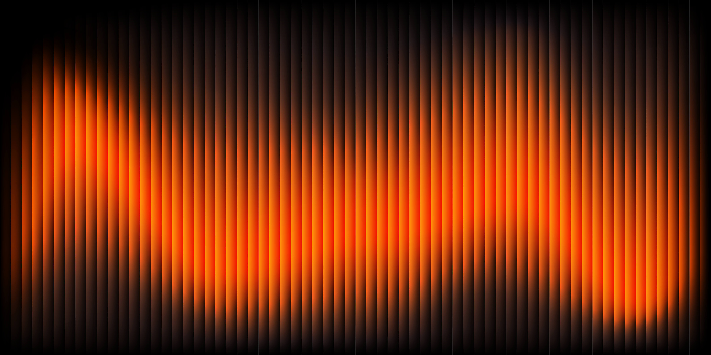
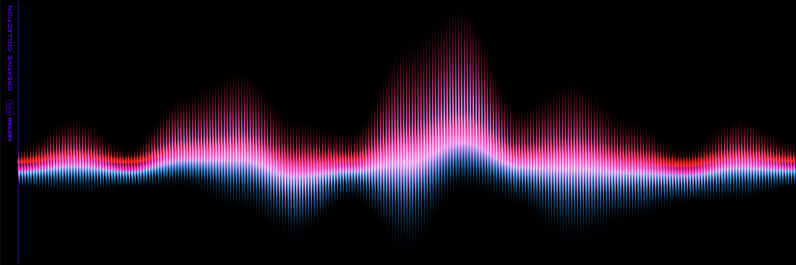

Streaming platforms have become one of the most common ways that people experience music today. Music streaming platforms such as Spotify, Apple Music and YouTube allow users to instantly have access to several catalogs with millions of songs and artists around the world on their devices: phones, computers, or mart devices. Personalized recommendations, algorithm-based suggestions and curated playlists makes the listening experienced even more catered to the user than before. These platforms are able to change the listeners habits as they listen to music that is available at all times and almost everywhere. Libraries are often being created and continue to evolve.
Social media is the pinnacle of music growth and direction throughout recent years. Because of the existence and growth of platforms like Tik Tok or Instagram reels, content is often consumed in short videos of 60 seconds or less, which transform the way that artists promote and create their music to be more appealing to the types of content that don’t require a lot of undivided attention. Artists are able to use these platforms to announce their new releases, interact with fans in a more personal way and it also influences their creative process. Things like dance challenges, audio trends and a more homemade approach can be seen as a result of the introduction to social media platforms. Allowing people to have a shared experience, social media bonds people with the art of music with each other.

Music Production Softwares introduces different music genres into mainstream media and allows the act of recording and producing music to become faster and more efficient. Programs known as Digital Audio Workstations (DAWs) are specialized on recording instruments, editing audio, composing songs, and mixing high quality music tracks. Because of this, many artists record and produce their music with affordable equipment and softwares. Digital Workspaces also allowed the rise of genres like EDM and experimental music such as hyperpop to become widely known and accepted within a wide range of communities. These platforms are able to allow people to collaborate easier, experiment and publish their music independently without relying on traditional recording studios or instruments.
Before physical concerts take place, music begins with a deep curiosity inside of a home. Bedrooms, living rooms and home studios are places where people are able to create new music from people around them through speakers or simply enjoy artists inside of headphones. Many music artists are modern in a way that it is not required to record music with big budgets, but instead prefer a more personal approach by producing quality music at home. Musical spaces can appear in many ways that allow creativity in different kinds of places, whether it is small or large expensive productions.
Music is generally part of a person's everyday life, heard in coffee shops, shopping centers, airports and even restaurants, it gives the places that people inhabit a new perspective and unique mood. Public spaces allow individuals to be exposed to different cultures, new sounds and even a place to share the same feelings with an audience. Whether it is street musicians performing in sidewalks, hearing a popular song through the park or background music in an elevator, these everyday environments show how music becomes part of the places of everyday and how it moves with people.